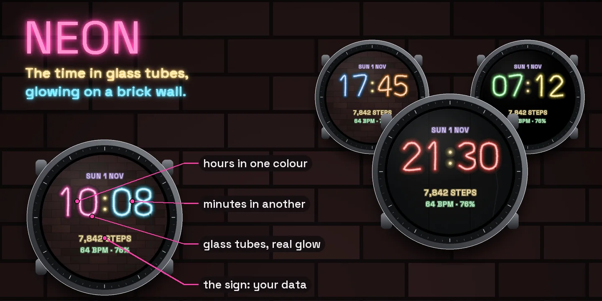
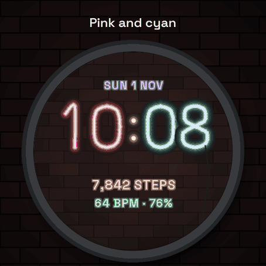
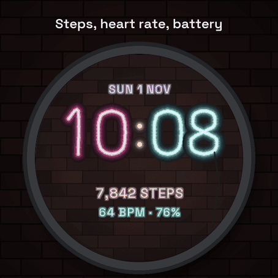
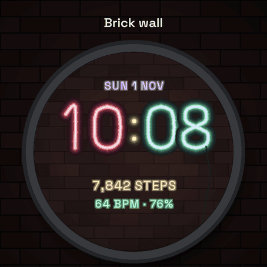
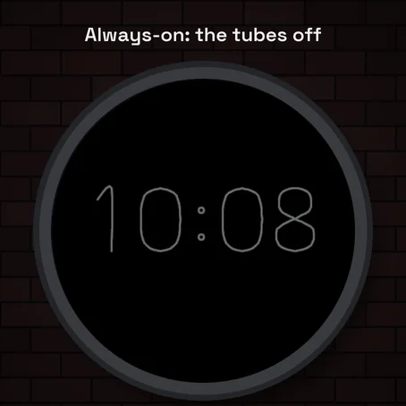
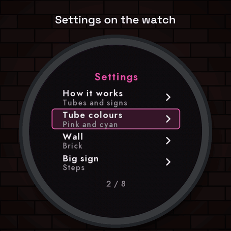

Settings on the watch
Hold UP, pick Watch Face, select Neon, press START, then Customize. The menu shows How it works, the tube colours, the wall, the three data on the sign, the hours and the always-on brightness. The same settings are in Garmin Connect.
The time in glass tubes
Big numbers bent from a single glass tube, like a real neon sign, glowing on a brick wall: the hours in one colour, the minutes in another, two golden dots between them. The glow spills onto the wall around each tube, and the black of an AMOLED screen makes it shine. The date glows above in violet.
The sign
Below the time, a smaller sign shows three data, each your choice: steps, heart rate, watch battery, Body Battery, calories, floors climbed, distance, intensity minutes, notifications, temperature, the next sunrise or sunset, or altitude. If your watch has no value, it shows -- rather than a made-up number.
Make it yours
- Five tube colours: pink and cyan, blue and orange, red, green and yellow, cool white.
- Three walls: brick, concrete, black.
- Hours like your watch, 24-hour or 12-hour.
Always-on
A separate always-on design on a black screen: the tubes are off, the time drawn in grey glass. It shifts slightly every minute to protect the screen.
The face asks for the location permission for sunrise and sunset; the position never leaves the watch. Compatible with the Garmin AMOLED watches listed below. English only. Questions or a watch you would like to see supported: use the support e-mail on this page.
Fonts: Space Grotesk and Jost (SIL Open Font License). The neon digits were drawn for this face.